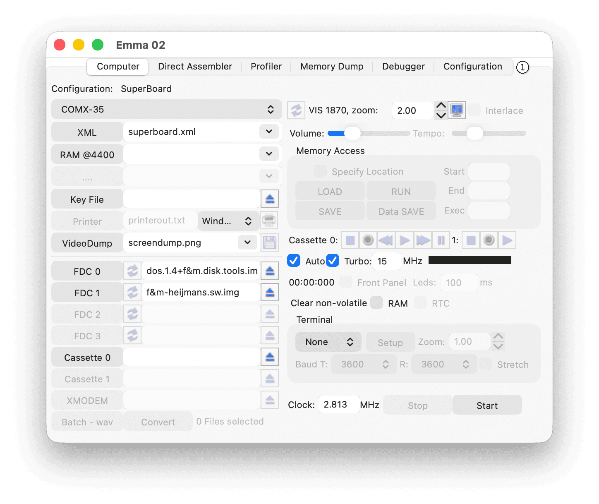

The Emma 02 emulator can emulate multiple computers based on the RCA 1802 microprocessor.
The main tabs of the Emma 02 graphical user interface are shown in the screenshot below.

To switch between tabs, select the desired tab (1).
The sections below describe the functions of each tab. For details about specific computers, see the Emma 02 website Computer List section. Additional details about emulation features can be found in the FAQ.
See the General section for:
The Computer tab allows you to select preconfigured XML files, adjust settings, control execution, and start the emulation.
The Direct Assembler tab (and disassembler) supports all 180x-related code (SYSTEM00, CDP1801, CDP1802, CDP1804, and CDP1805/CDP1806) as well as multiple pseudo-code variants such as Chip-8, Super-Chip, ST2, and ST4. See the Machine Code Syntax and Pseudo Code Syntax sections.
The assembler can be used for anything from small programs to large projects. The complete COMX Super Board firmware was written using the Emma 02 assembler.
The Direct Assembler tab is also useful for debugging and patching existing code. See the Debugging Existing Code - Example section.
The Profiler tab helps identify code hotspots, dead code, coverage statistics, and performs timing analysis of the running computer and CPU.
The Memory Dump tab shows one 256-byte memory page in hexadecimal format. It can display RAM, ROM, video memory, memory types, and profile counters.
The Debugger tab allows you to trace code, set breakpoints, and inspect registers.
The Configuration tab shows the I/O configuration of the selected computer.